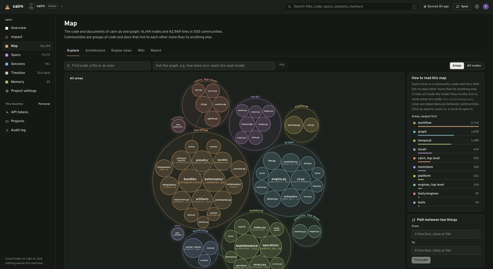
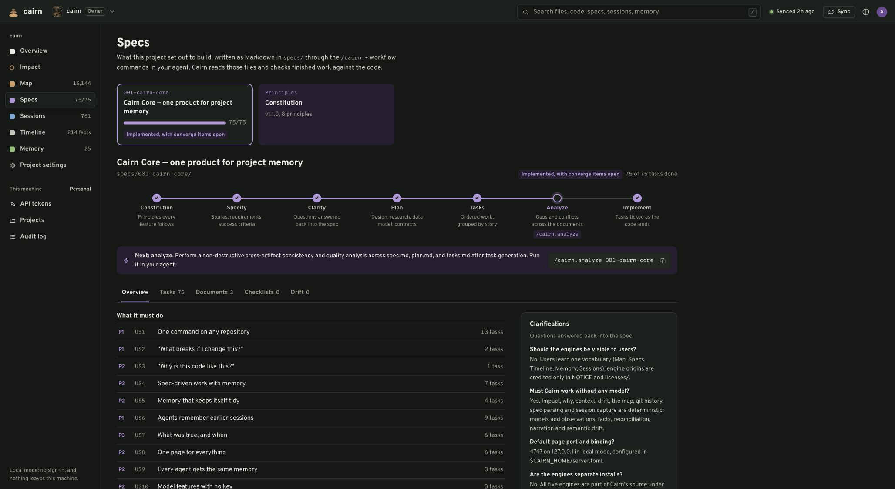
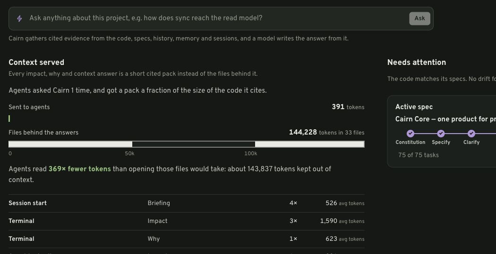

Engineering evidence
“Can we support our delivery and AI-use claims?”
Receipts + Prompture
Sovix CLI provides a small entry point. Evaluate Qmmit’s capture pieces before consolidating.
A FIELD GUIDE TO THE WORK ALREADY HERE
Understand what each project does, where the ideas overlap, and which work deserves the next week of attention.
01 / THE PORTFOLIO
This is a recommended structure. The lines below describe possible collaboration, not existing integrations.
“Can we support our delivery and AI-use claims?”
Receipts + Prompture
Sovix CLI provides a small entry point. Evaluate Qmmit’s capture pieces before consolidating.
“Can agents change code without relearning it?”
Cairn + Foundry
Architecture Foundry and Java rules add discipline. Keep knowledge separate from permission to act.
“What did we decide, and what happens next?”
Notetaker → Spreix Platform
Cortex’s compiler and Brain’s uncertainty inbox are complementary building blocks.
OBSERVE has a distinct operations buyer. Lumen is a document-platform choice. FreeLLMAPI is infrastructure; Scratch is a local writing surface. Empty and seed folders are not additional businesses.
02 / THE NEXT MOVE
03 / THE REPOSITORY INDEX
Each folder contains a report, developer/Claude onboarding, source references and a visual workflow.
Broad implementation
Keep as the detailed capture product; consolidate Qmmit direction here.
Control plane implemented
Keep as an internal delivery system until independent products prove it.
Alpha with live UI
Strong developer-product candidate; validate outcomes beyond compression.
Focused tested CLI
Quickest clear distribution wedge.
Empty directory
Reserve the name; do not start another implementation.
Implemented personal wiki
Reuse the compiler; avoid a second broad team platform.
Multi-service vertical slice
Choose as a standalone document platform only for a specific buyer need.
Instruction pack + example
Useful internal standard; enforcement needs to catch up with prose.
Focused MVP
Keep as a product experiment; port the uncertainty inbox.
CLI + web implementation
Consolidate with Prompture rather than maintain two capture businesses.
Small working implementation
Keep as a focused component or migration source for Cairn.
Established desktop app source
Use as a human writing surface; preserve upstream identity.
Claude plugin / knowledge pack
High-value companion to delivery tools; small distribution surface.
Bootstrap archive
Archive as lineage of AI SDLC, not an additional product.
Beta CLI + portable dashboard
Best near-term evidence product; share methodology with Sovix CLI.
Broad product implementation
Strongest concrete team workflow; narrow the promise around reliable follow-through.
Broad observability implementation
Distinct buyer and highest operational stakes; keep a separate product boundary.
Gateway + admin implementation
Useful shared utility; reliability beats a “free forever” promise.
Consolidated implementation; deployment unverified
Largest team-product upside and largest scope risk.
Exploratory Next.js implementation
Narrow into a sourced briefing feature before making a separate business.
No projects match. Clear the search or choose all families.
04 / WHERE THEY OVERLAP
A shared word such as “brain” or “agent” is not enough reason to merge two systems.
Choose two projects to compare their roles, workflows and gaps. The full overlap table is also available in the portfolio report.
05 / FIRST SUCCESS
Cairn’s five layers are explained in depth, with real screens, fixture exercises and a careful reading of savings.


06 / UNDERSTAND THE SAVINGS
The live Cairn panel showed 391 estimated tokens sent against a 144,228 source-file estimate: about 369×. It did not measure what an agent otherwise would have read.

Existing local records, not a benchmark created in this review. Full explanation and scope caveats are in the onboarding guide.
07 / EFFORT, UPSIDE & EXPOSURE
Reviewer judgments from 1 (low) to 5 (high). Effort means reaching a narrow credible pilot. Upside means plausible breadth and recurrence of the need.
| Project | Effort / 5 | Upside / 5 | Risk / 5 |
|---|---|---|---|
| Prompture | 3 | 4 | 4 |
| Foundry / AI SDLC | 3 | 5 | 5 |
| Cairn | 2 | 5 | 3 |
| Sovix CLI | 1 | 3 | 1 |
| Spreix Company Brain | 1 | 1 | 1 |
| Cortex / compiled wiki | 2 | 3 | 3 |
| Lumen | 3 | 3 | 4 |
| Java AI governance scaffold | 1 | 2 | 2 |
| Spreix Brain | 2 | 3 | 3 |
| Qmmit | 2 | 2 | 3 |
| kb code graph | 2 | 2 | 2 |
| Scratch | 2 | 2 | 2 |
| Architecture Foundry | 1 | 3 | 2 |
| Foundry Stage 0 seed | 1 | 1 | 2 |
| Receipts | 1 | 4 | 2 |
| Spreix Meeting Intelligence | 2 | 5 | 4 |
| OBSERVE | 4 | 5 | 5 |
| FreeLLMAPI | 2 | 3 | 3 |
| Spreix Platform | 4 | 5 | 5 |
| Researcher | 2 | 2 | 3 |
Park the empty Company Brain directory and Stage 0 seed. Scores do not make them implemented products or prove customer demand.
THE WORK IS SAVED
The brief, source snapshots, decisions, onboarding and validation record are committed together. Future sessions can continue from the documentation.